This week we are going to explore ways that DNA supercoiling can be used to keep either genome open or closed depending on the conditions that are required.
Tuesday Preview
The interaction between nucleic acid and protein.
Non-specific nucleic acid-protein interactions
3 Different Ways
- Stacking of aromatic amino acid(Trp and Tyr)
- Electrostatic interactions between positively charged side chains and negatively charged phosphate backbone(Arg, Lys and His)
- Hydrogen bonding between side chains and sugar molecules. (Lys)
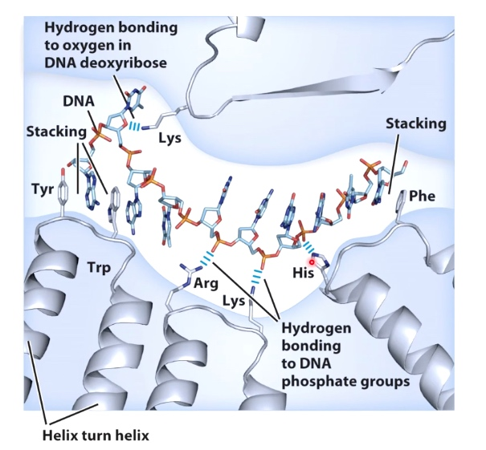
Single-stranded DNA Binding Protein
We can see from the picture that a single-stranded DNA wrapping around this quaternary structure. The protein is to protect DNA from degradation.
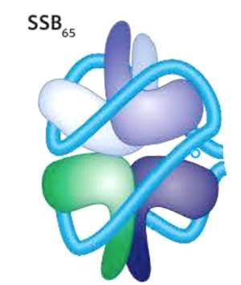
The SSB proteins and replication protein A(RPA) interact with DNA backbone using OB folds.(oligonucleotide/oligosaccharide)
Specific Nucleic Acid-protein Interactions
The hydrogen bonding between amino acid side chains and bases in the DNA.
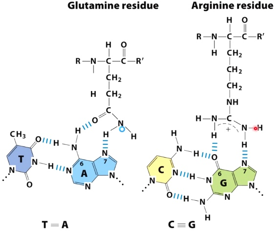
TA with Glutamine; CG with Arginine.
Such interaction often occue in B-form major groove. The reason that hydrogen bonding opportunities within the major groove compare to the minor groove are orientation specific.
- The pattern of hydrogen bond donoes and acceptors in the major groove is asymmetric.
- Hydrogen bonds in the major groove are specific for each orientation of each base pair.
- There is less steric hindrance in the major groove.
Example: Engrailed(transcription factor) specofocally interacts with the major groove of dsDNA.(double stranded DNA)
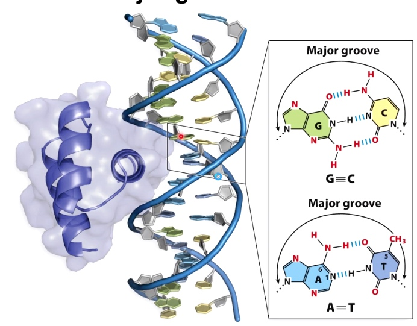
Three alpha helices and space filling structure.
It is common to see alpha helices of proteins interacting with multiple bases in the major groove of DNA.
Many proteins bind both specifically and non-specifically
Example the Lac repressor protein
The job of the Lac repressor is to bind at the operator DNA sequence and hide the promotor to turn off the transcription of the lac opera.
The way Lac repressor hide is to bind two sides of the dsDNA.
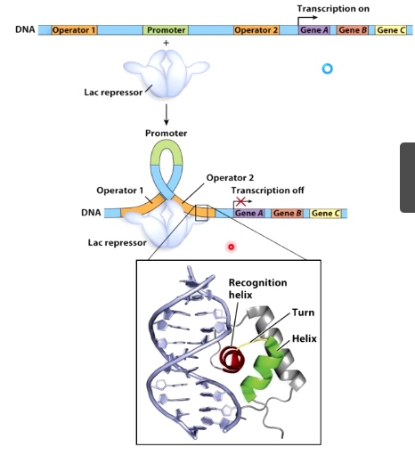
The recognition helix is to make specific hydrogen bond contacts with the bases at the operator sequence.
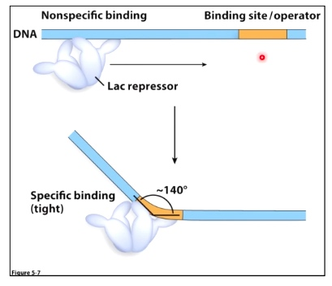
Non-specific binding: Kd = 5 * 10-4
Site-specific binding: Kd = 2 * 10-11
Smaller Kd means tight binding.
Proteins can also recognize specific DNS structures
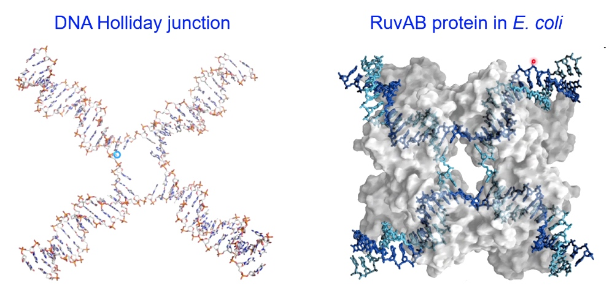
Thursday Preview
DNA Topology
The DNA vector is not always circular. The electron micrographs of circular DNA show multiple conformations of the plasmid.
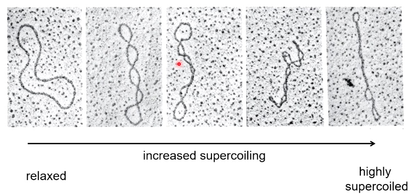
What causes supercoiling?
Usually result from underwinding of the double helix. Such that you have fewer helix turns than you would expect for B-form DNA.
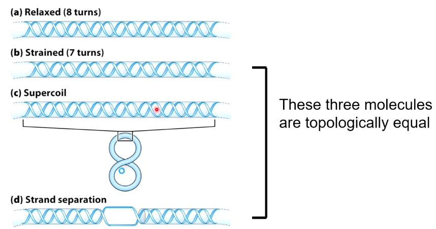
What causes supercoiling in vivo?
In vivo, processes such as DNA replication and DNA transcription can result in supercoiling due to a localized unwinding of the DNA double helix.
Unwinding of the DNA helix(RNA Polymerase)
The RNA polymerase is unwinding the DNA, results in overwinding of the DNA in the direction that transcription is proceeding. And the compensatory underwinding of the DNA in the direction where RNA polymerase is moving from.
Binding of Proteins to DNA
See in jornal club.
Supercoiling Variables for Circular Covalently Closed DNA(cccDNA)
- Linking Number(Lk): # of times one strand completely passes around the other.
- 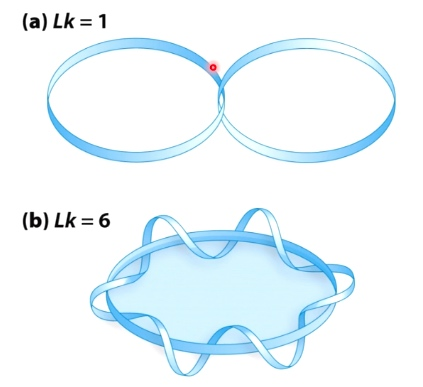
- Lk is a topological property that does not change when DNA is bent, deformed or denatured.
- \(Lk_0 = \frac{\#\text{base pairs}}{10.5}\)
- 10.5 is the bp/turn in relaxed B-DNA
- \(\Delta Lk = Lk - Lk_0\)
(DNA nick is a broken phosphate bonds.)
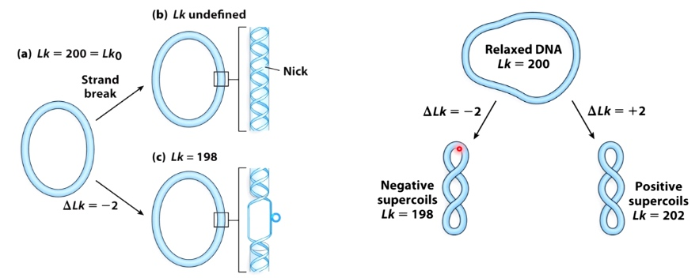
If a DNA has a nick, we cannot define its Lk.
- \(\sigma = \frac{\Delta Lk}{Lk_0}\)

- \(-\sigma\) indicates negatively supercoiled DNA
- \(+\sigma\) indicates positively supercoiled DNA
- For most cellular DNA, sigma = -0.05 to -0.07
- Twist: # of times one-stranded completely wraps around the other strand
- Twist is equal to Lk if there is no supercoling
- Writhe: # of times helix crosses itself in 3D space.
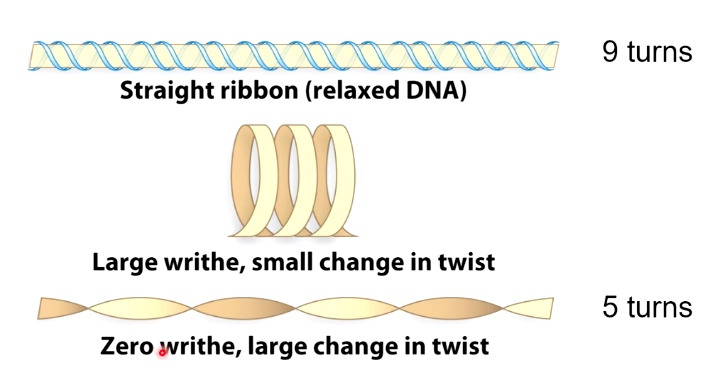
Two Forms of Writhe
- Plectonemic
- 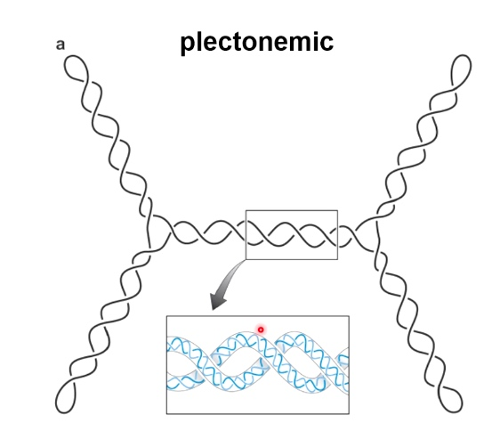
- Solenoidal
- 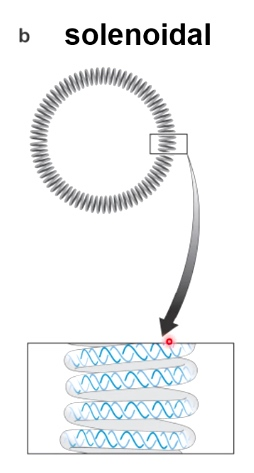
DNA Topology: twist and writhe are interconvertible.
Important equation: Lk = Tw + Wr
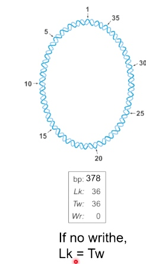
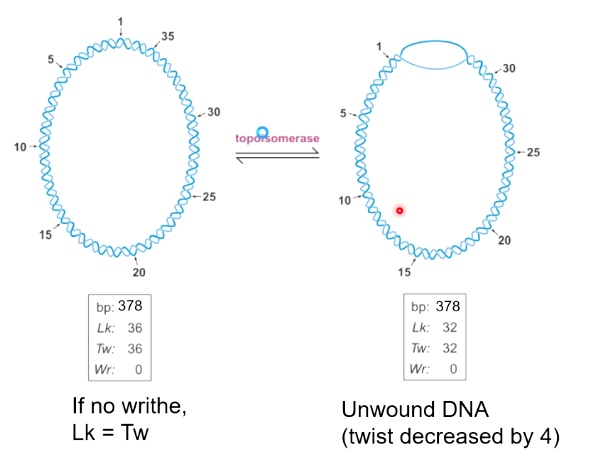
Unwound DNA is not energetically stable.
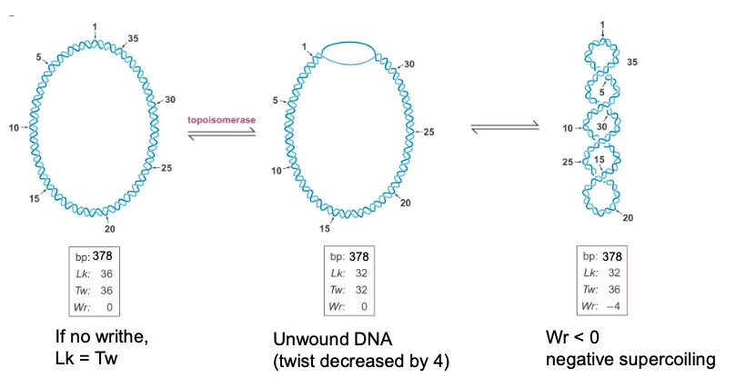
So when Wr < 0, we can say it is negatively supercoiled.
Gel Electrophoresis can Distinguish between Different Topoisomers
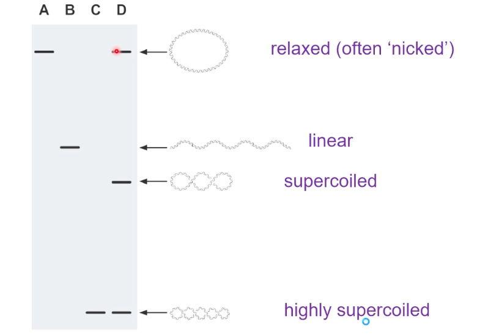
Supercoiled DNAs can migrate the fastest. Because they can compress very tightly.
Electrophoresis of DIfferent Topoisomers of a Circular DNA Moleculr.
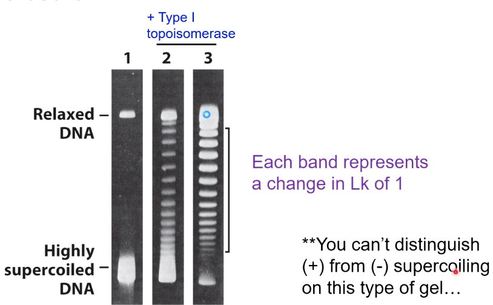
2D Gel Electrophoresis Can Also Indicate Supercoiling Status
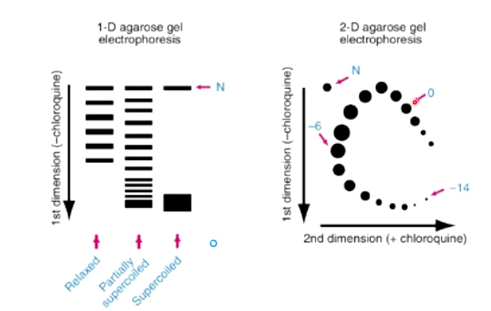
Introduce DNA Topology Again
The "relaxed" DNA is 10.4 bp/turn. One way to describe the sturcture of DNA double helix is by a combination of its twist and writhe. The sum of which is called linking number.
Twist + Writhe = Linking Number
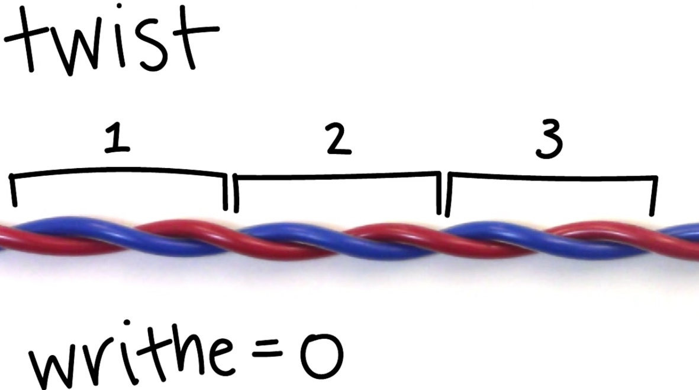
- Twist: # of times one-stranded completely wraps around the other strand
- Twist is equal to Lk if there is no supercoling
- Writhe: # of times helix crosses itself in 3D space.
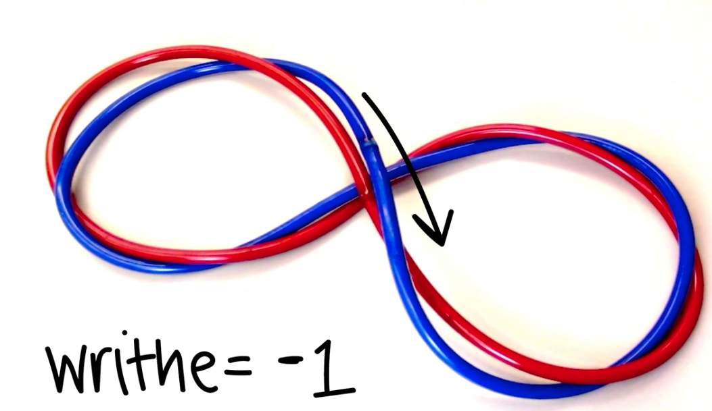
Because it follows the right hand rule. And the upper strand travels from left to right.
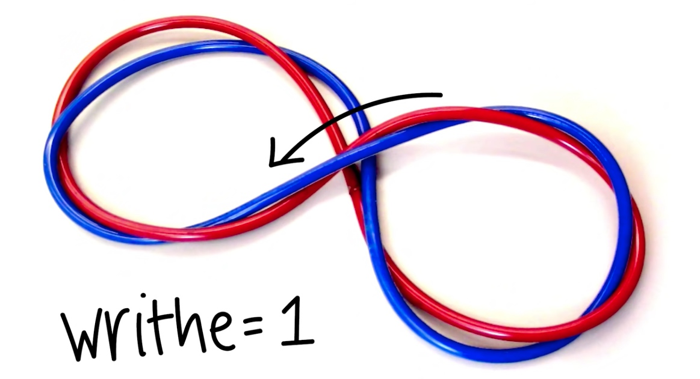
For this video, we are going to talkk about cccDNA(covalently closed circular DNA)
Property of cccDNA
Unlike the linear DNA, this shape is topologically constrained. We cannot change the linking number of the DNA without breaking one or both of the strands.
Overwound DNA
<10.4 bp/turn. The linking number is rising.
Whereas the relaxed DNA is 10.4 bp/turn.
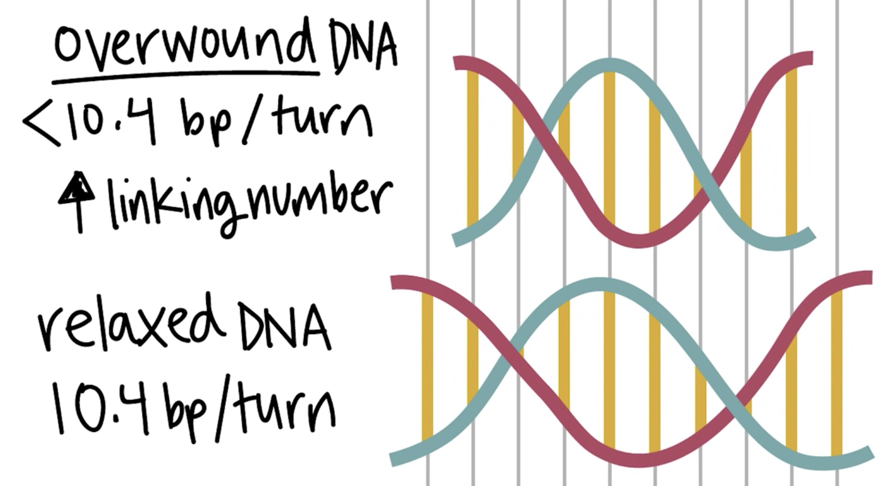
Overwound --> Positively supercoiled --> Higher Linking Number The double-stranded structure begins wrapping aounr itself and creating positive writhe.
Underwound DNA
>10.4 bp/turn. The linking number is decreasing.
Whereas the relaxed DNA is 10.4 bp/turn.
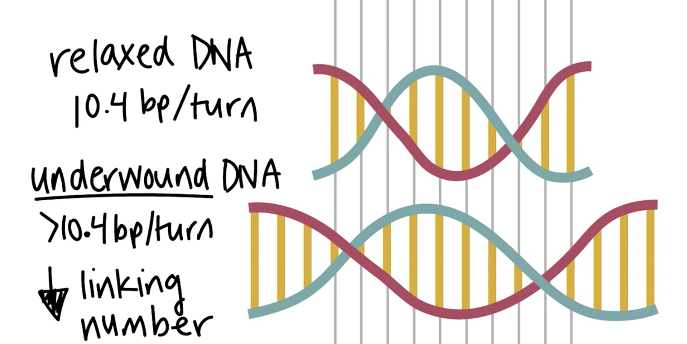
Underwound --> Negatively supercoiled --> Lower Linking Number The double-stranded structure begins wrapping aounr itself and creating negative writhe.
Topoisomerases
Class of enzyme usually restores DNA to its relaxed state.
- Unwind overwound DNA. Linking number decrease and bp/turn increase.
- Rewind underwound DNA. Linking number increase and bp/turn decrease.
Woking by breading one or two DNA strands and passing the same number of DNA strands through the break.
Type I Topoisomerase
Breaks one of the two DNA strands and passes the other strand through the gap.
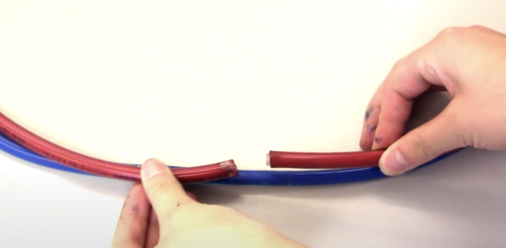
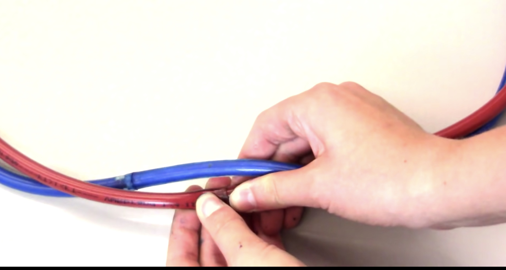
Increase or decrease the Lk by 1.
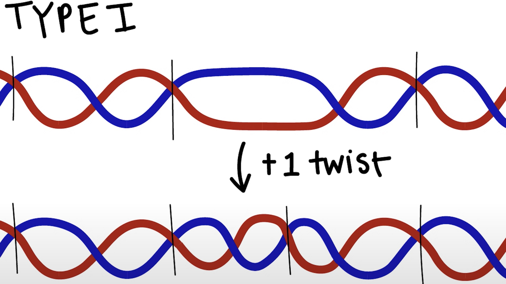
Do not require additional energy.
Type II Topoisomerase
Break both of the two DNA strands and passes the entire double helix thorugh the gap.
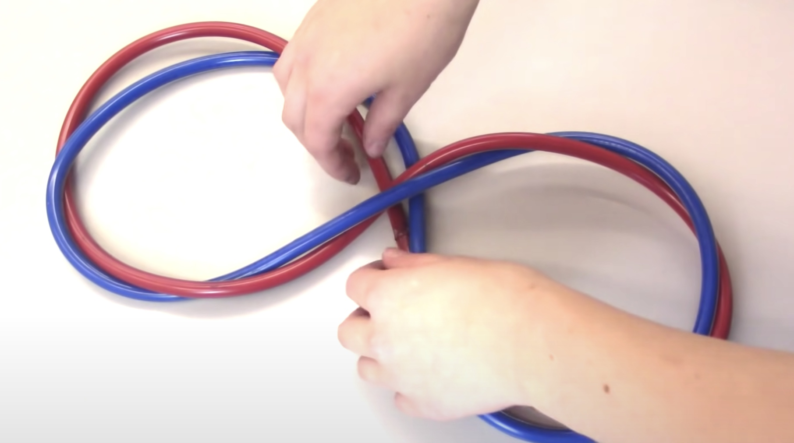
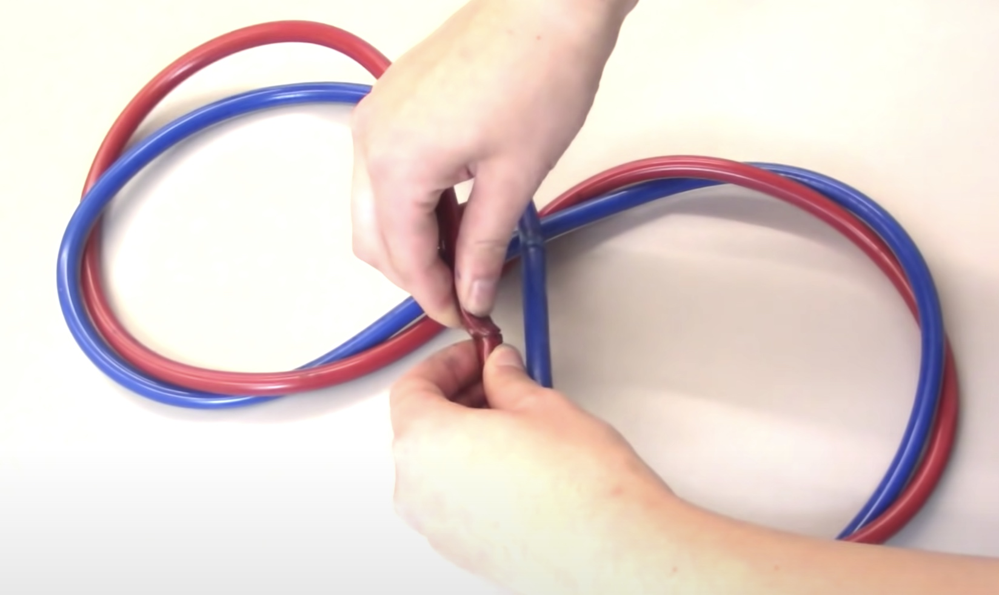
Increase of decrease the Lk by 2.
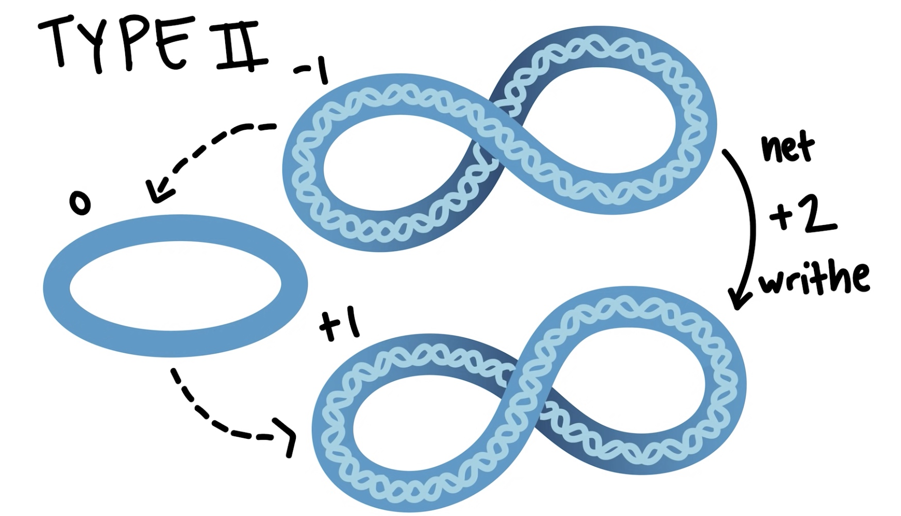
Make +2 writhe
Needs energy in ATP/NADH. Bacteria also has a kind of type II topoisomerase called gyrase.
Reverse gyrase positively supercoil DNA rather than restoring DNA to the relaxed state. Why?
Bateria needs to survive in high temperature. In this way, the structure is stablized.
Why DNA needs negatively supercoiled?
In fact the DNA of most organisms is negatively supercoiled, which peovides a store of free energy that helps cellular energy that require strand speration of the double helix like DNA replication and transcription. Underwound DNA has a tendency to partially seperate. So strand seperation is easier than in a relaxed DNA.
In short, negatively supercoiled DNA makes it easier to seperate the double helix into two single strands. When we are trying to seperate the doublel helix DNA, we are creating more twists in the rest of the DNA. Causing rewinding of the underwound strands.
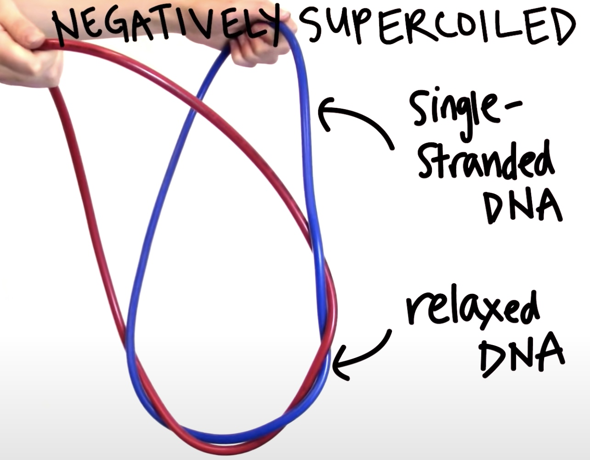
If we try to seperate the double helix of relaxed DNA, we would introduce more twists in the DNA and end up overwinidng or positively supercoiling the double helix, which is energetically unfavorable.